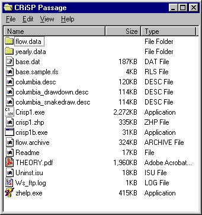

There are four files required to run COMPASS in both Scenario and Monte Carlo modes:
columbia.desc: defines the river segments, locations of dams, and release sites
crisp1.exe: COMPASS executable code
base.dat: a database file that can be read into COMPASS
flow.archive: A file of flows, spills and reservoir elevations (elevations are given in HYSSR files) initially generated from a hydroregulation model such as SAM, HYSSR or HYDROSIM. Outputs of these models are converted to COMPASS compatible flow files using a preprocessor.
In the simplest file arrangement, all files are placed in the same folder (or directory). For example, the configuration below shows these files contained within the folder named CRiSP Passage. By default, output files are written to the directory from which COMPASS was executed (the COMPASS "home directory"). On Windows 95/NT operating systems, this is the source directory for crisp1.exe. When saving files to the local system, you can override the default directory to specify any output directory. On the Unix system, the files can be written out to any directory for which the you have write permissions. For more information about these files and other input and output files, see the COMPASS Files section.

Windows 95/NT installation of COMPASS